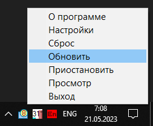

forum_ruboard
Назначение
Поиск новых сообщений в заданных темах и отображение их числа в трее. Считается что это досит форум, так как запрашивает с десяток тем за клик или за период времени, что создаёт нагрузку на сервер. Поэтому используем внутренний движок уведомлений о новых постах в отслеживаемых темах.

Утилита показывает в трее появление новых сообщений в указанных темах на форуме forum.ru-board.com и forum.oszone.net
1. Запрос странички осуществляется каждый час (3600 сек), этот параметр можно уменьшить или увеличить в ini, учитывая что 1 запрос 50-150 кб, то 30 запросов тратит трафик 150*30 = 4500кб = 4.5Мб и умножить на количество страничек
2. Кнопка "Сброс" в меню просто обнуляет список новых сообщений, "Приостановить" - прекращает запросы новых сообщений, но при возобновлении покажет новые, "Просмотр" - показывает список новых сообщений.
3. Новые сообщения можно увидеть во всплывающей подсказке, хотя не все, ограничение 128 символов